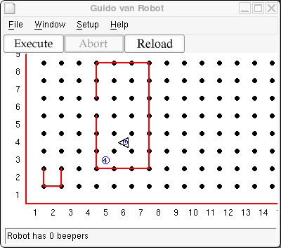

The do instruction lets Guido do an action more than once, but
it has a limitation: you must know in advance how many times the action should
be executed. If you are at an intersection and you need to pick up several
beepers there but you don't know how many there are, you cannot use a
do statement. The while statement can work in this
situation.
The general format of the while instruction is
while test-condition-is-true:
action
where test-condition-is-true is some conditional that evaluates
to either true or false, and action
is either a single command (like move;) or a sequence of commands
in a block. As long as the tested condition is true, the action will
be performed. Thus while is similar to do except
that where do specifies a number of times to execute an
instruction, while specifies a test condition. As long as the
test condition is true, the instructions will be executed over
and over.
For example, to pick up a stack of beepers you could write
while next-to-a-beeper:
pickbeeper
This says that as long as there are beepers at this intersection, pick one up and check again. The result will be that there won't be any beepers at the current intersection. They will all be in Guido's beeper bag.
Writing a while loop is tricky; there are many details to get
right. The general steps are
while opposite condition:
...statements here...
Watch out for infinite loops, that is, loops that never terminate.
It's Monday morning, again. Before he goes to school, Guido has to take out the trash. He's not sure how many bags of trash there are (represented by beeper bags), but he knows they are in the corner of the room as shown in this world view:

He needs to pick up all the trash and put it in the dumpster in one trip.
Use one or more while statements to instruct Guido to take out
the trash. After depositing the trash, have Guido step back to see that
the trash is properly in the dumpster.
Copyright © 2003 Roger Frank.